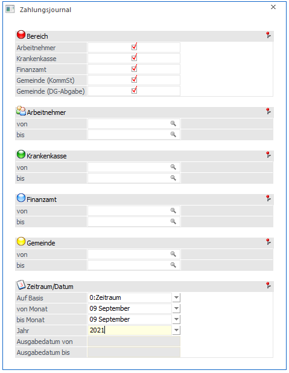
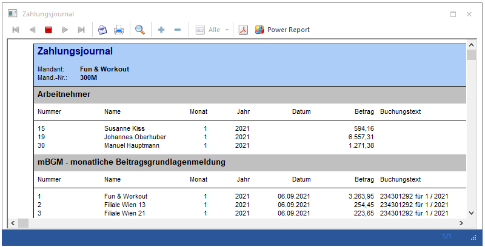
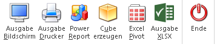

Über den Menüpunkt
1 Abschluss
1 Auszahlung
1 Zahlungsjournal
kann die Auswertung Zahlungsjournal aufgerufen werden.

Das Zahlungsjournal gibt Auskunft über alle Auszahlungen, die über den Menüpunkt Auszahlung durchgeführt wurden. Dabei können folgende Selektionen vorgenommen werden:
Ø Bereich
Hier kann mittels Checkbox selektiert werden, welche Arten von Zahlungen auf der Auswertung berücksichtigt werden sollen.
Ø Arbeitnehmer von - bis
Hier kann auf die AN-Nummer eingeschränkt werden, für die die Auswertung durchgeführt werden soll. Wie die AN-Nummer eingegeben werden kann, dazu gibt es mehrere Möglichkeiten. Details dazu entnehmen Sie bitte dem Kapitel Aufruf einer AN-Nummer. Wird in den Feldern von - bis ein AN eingetragen, so wird daneben der Name des AN angezeigt, wobei der Name unterstrichen dargestellt wird. Durch einen Klick auf den AN wird standardmäßig der AN-Stamm aufgerufen. Über die rechte Maustaste kann aber individuell eingestellt werden, welche Aktion ausgelöst werden soll. Dabei stehen folgende Optionen zur Verfügung:

ü Arbeitnehmerstamm
Es wird der
AN-Stamm aufgerufen, wobei gleich der Datensatz des angezeigten AN angezeigt
wird.
ü Arbeitnehmerinfo
Es wird die
Arbeitnehmerinfo im Programm WinLine INFO geöffnet.
ü Jahreslohnkonto
Es wird das
Steuerfenster für das Jahreslohnkonto aufgerufen, wo der ausgewählte AN gleich
vorgeschlagen wird. Die Ausgabe muss nur mehr durchgeführt werden.
ü Arbeitnehmer Stammblatt
Es wird
das Steuerfenster für das Arbeitnehmer Stammblatt aufgerufen, wo der ausgewählte
AN gleich vorgeschlagen wird. Die Ausgabe muss nur mehr durchgeführt werden.
ü Lohnerfassung A
Es wird die
Einzelabrechnung aufgerufen, wobei gleich alle Daten des ausgewählten AN
abgerufen werden. Bei diesen Punkt ist darauf zu achten, dass ggf. die
automatischen Lohnarten abgearbeitet werden.
Die zuletzt getätigte Einstellung wird als Standard übernommen, d.h. wenn das nächste Mal nur auf den AN-Namen geklickt wird, dann wird die letzte Aktion automatisch durchgeführt. Diese Einstellung wird pro Benutzer gespeichert.
Ø Krankenkasse
Hier kann auf eine Krankenkasse eingeschränkt werden.
Ø Finanzamt
Hier kann auf ein Finanzamt eingeschränkt werden.
Ø Gemeinde
Hier kann auf eine Gemeinde eingeschränkt werden
Zeitraum/Datum
Ø Auf Basis
ü 0 Zeitraum
Wird als Basis der
Zeitraum ausgewählt, so kann eine Selektion von Monat bis Monat erfolgen. Es
werden dann alle Zahlungen die in den selektierten Monaten getätigt wurden am
Zahlungsjournal gelistet.
ü 1 Ausgabedatum
Wird als Basis
das Ausgabedatum ausgewählt, so kann eine Selektion nach Ausgabedatum von - bis
erfolgen. Es werden dann alle Zahlungen die im selektierten Zeitraum getätigt
wurden am Zahlungsjournal gelistet.
Ø Von Monat bis Monat
Hier können die Perioden angegeben werden, nach denen ausgewertet werden soll. Dazu muss im Bereich "auf Basis" der Zeitraum ausgewählt werden.
Ø Jahr
Auswahl des Jahres, für das die Auswertung durchgeführt werden soll.
Ø Ausgabedatum von - Ausgabedatum bis
Hier kann der Zeitraum angegeben werden, nach dem ausgewertet werden soll. Dazu muss im Bereich "auf Basis" das Ausgabedatum ausgewählt werden.

Buttons

Ø Ausgabe Bildschirm
Mit Hilfe des Buttons "Ausgabe Bildschirm" oder der Taste F5 wird die Auswertung am Bildschirm ausgegeben.
Ø Ausgabe Drucker
Durch Anwahl des Buttons "Ausgabe Drucker" wird die Auswertung am Drucker ausgegeben.
Ø Power Report
Durch Drücken des Buttons "Power Report" wird die Auswertung auf Basis von Cube-Daten grafisch dargestellt. Die Ausgabe ist individuell anpassbar und erfolgt in der Form von "Widgets", die unterschiedlichsten Darstellungen ermöglichen.
Ø Cube erzeugen
Wenn die Option "Cube erzeugen" gewählt wird, wird die Auswertung im "Olap Viewer" angezeigt. In diesem können die Daten nach verschiedenen Gesichtspunkten ausgewertet werden.
Ø Excel Pivot
Durch Anwahl des Buttons "Excel Pivot" werden die selektierten Zeilen in Form einer eiPivot Ausgabe in Microsoft Excel (2007 oder höher) angezeigt.
Ø Ausgabe XLSX
Mit Hilfe des Buttons "Ausgabe XLSX" wird die Auswertung mit den von Ihnen definierten Selektionen an Microsoft Excel übergeben.
Ø Ende
Durch Drücken des Buttons "Ende" bzw. der Taste ESC wird das Fenster geschlossen.